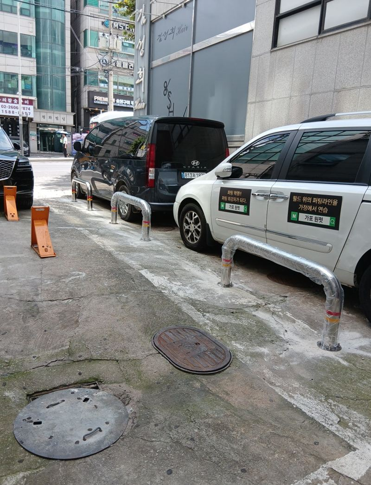
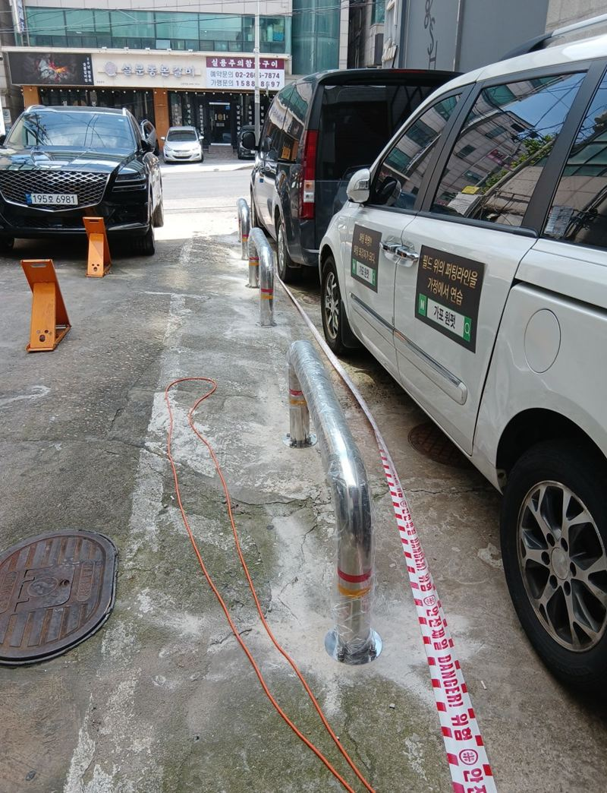
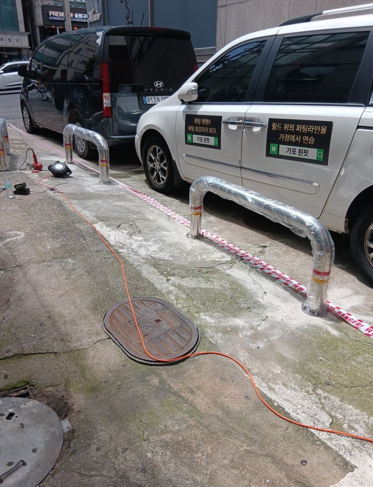
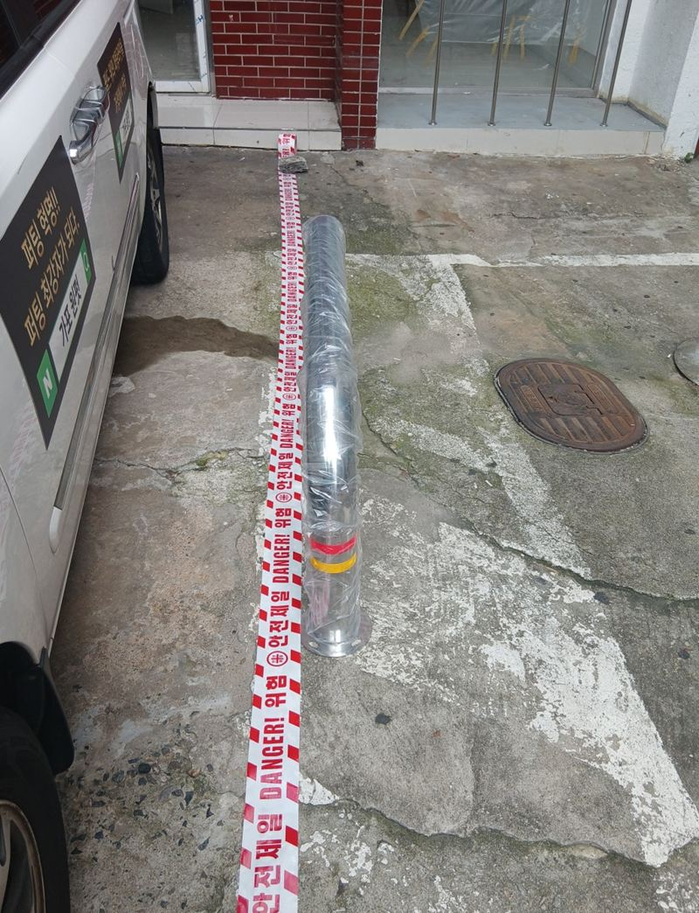
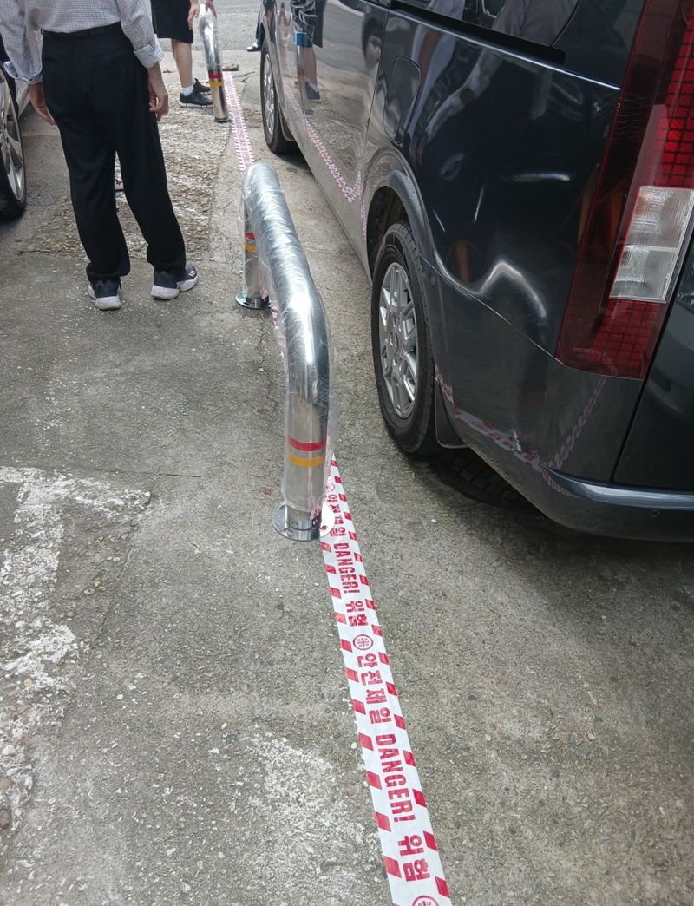
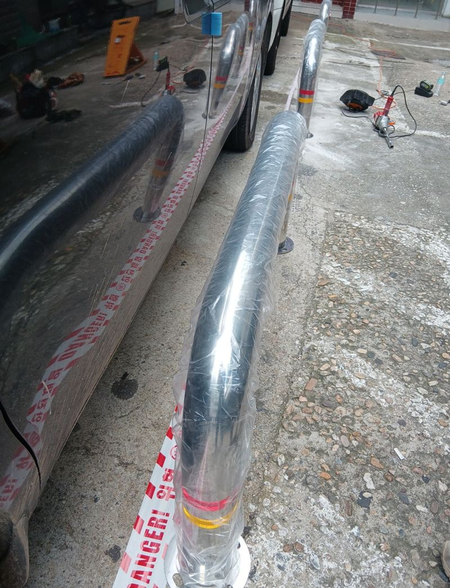
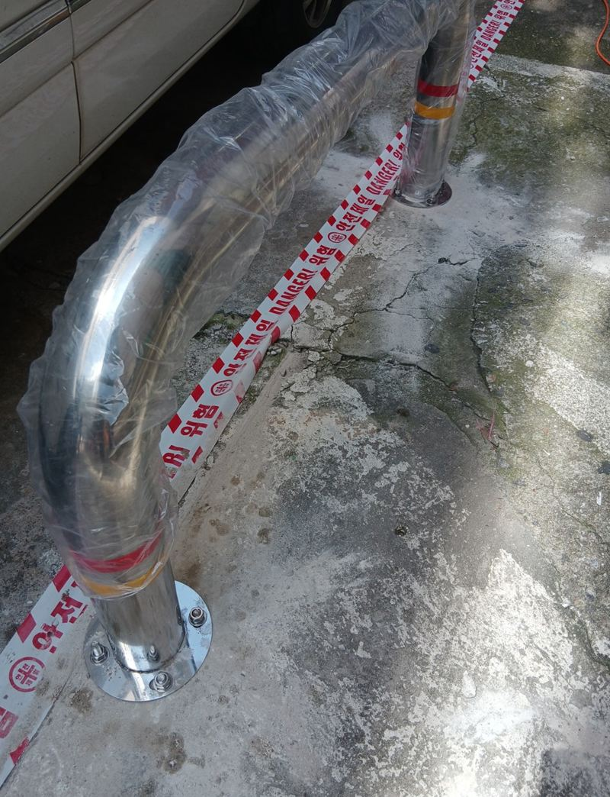

양천 주차 진입금지 U자 볼라드 설치 목적과 방법


설치 전설치 후← 밀어서 전후 비교 →
"제 땅인데도 모르는 차들이 들어와 하루 종일 안 빼요. 세입자들이 불편해해서 가게가 안 나가요." 양천 신정역 근처 상가 건물주분의 연락이었어요. 건물 앞 공간이 도로와 그대로 이어져 있어 누구나 차를 대고 갔어요. 땅속 전선·통신선을 먼저 탐지한 뒤, 차는 못 들어오고 사람은 지나가는 간격으로 U자 볼라드 4개를 한 줄로 세웠어요.
| 현장 | 서울 양천구 신정역 근처 상가 건물 앞 사유지 |
|---|---|
| 문제 | 외부 차량 무단 장기 주차, 세입자 불편 |
| 한 일 | 설치선 긋기·측량 → 지하 매설물 탐지 → U자 볼라드 4개 매립·정렬 → 기초 고정 → 흔들림 확인 → 실리콘 마감·정리 |
| 형태 | 스테인리스 U자형, 매립 고정 |
볼라드를 세우는 목적
- 무단 주차 막기상가·주택 앞에 남의 차가 서 있지 못하게 해요.
- 보행자 길 나누기차가 다니는 곳과 사람이 걷는 곳을 눈에 보이게 나눠요.
- 건물 보호후진하는 차가 벽이나 유리창을 들이받지 않게 해요.
- 경계 표시어디까지가 내 땅인지, 주차 구획이 어디인지 보여 줘요.
이번 현장은 그 결과가 세입자 구하기에까지 이어질 만큼 급했어요. 건물 앞이 정리돼야 가게를 보러 온 사람도 들어오기 편하니까요.


U자 볼라드 간격 정하기
승용차 폭은 대략 1.8m가 넘어요. 그래서 볼라드 사이를 1.2m 안쪽으로 두면 차는 빠져나가지 못해요. 반대로 너무 좁히면 유모차, 자전거, 배달 카트가 못 지나가요. 땅에 먼저 줄을 긋고 재면서, 사람 길은 남기고 차 길만 막히는 간격을 잡았어요.


땅속 전선부터 확인한 이유
건물 앞 땅속에는 전기선, 통신선, 배관이 지나가는 경우가 많아요. 모르고 파다 끊으면 정전이나 통신 장애, 심하면 감전 사고로 이어져요. 이 현장도 매설물이 있어서 파기 전에 탐지 장비로 위치를 확인하고 피해서 자리를 잡았어요.
탐지와 위치 확정
매설물을 피해 4개 자리를 확정했어요.
매립과 정렬
구멍을 내고 볼라드를 세운 뒤 줄이 반듯하게 맞는지 보며 고정했어요.


흔들림 확인과 마감
하나씩 밀어 흔들림이 없는지 보고, 둘레를 실리콘으로 마감한 뒤 주변 바닥을 정리했어요.
제대로 고정하지 않은 볼라드는 차에 받히면 넘어져 오히려 위험해요. 몰탈 고정과 앵커, 충분한 깊이가 필요한 이유예요. 건물주분은 "줄도 반듯하고 진짜 차가 못 들어오겠다, 이제 마음 놓고 세입자 받겠다"며 뒤쪽 출입구도 맡기고 싶다고 하셨어요.
설치 전에 정해 두면 좋은 것
볼라드는 한 번 박으면 옮기기 어려워요. 그래서 막을 선을 정하기 전에 차가 꼭 들어와야 하는 날이 있는지, 짐을 내리는 트럭이 서야 하는 자리가 있는지 먼저 생각해 두세요. 필요하면 가운데 한 개만 뺐다 꽂을 수 있게 하기도 해요.
바닥 아래 매설물 위치에 따라 원하는 자리에 못 세울 수도 있어요. 이 현장처럼 탐지 후 조금씩 자리를 옮겨 간격을 다시 맞추는 경우가 있으니, 설치 위치는 현장에서 최종으로 정해요.
무단 주차 볼라드 질문
사유지면 마음대로 세워도 되나요?
건물 앞이라도 도로 쪽 땅이 섞여 있을 수 있어요. 등기상 내 땅 안쪽에 세우는지 먼저 확인해 두세요.
내가 차를 댈 땐 어떻게 하나요?
가운데 한 개를 탈착식으로 하면 필요할 때 빼고 차를 넣을 수 있어요.
U자형과 일자형 중 뭐가 나아요?
U자형은 폭이 넓어 적은 개수로 넓게 막고, 일자형은 좁은 곳에 촘촘히 세울 때 좋아요.
바닥이 아스팔트예요.
아스팔트도 타공 후 매립할 수 있어요. 바닥 두께를 보고 방법을 정해요.
몇 개가 필요한가요?
막을 폭을 간격으로 나눠 정해요. 입구 폭을 재서 알려주세요.
녹이 슬지 않나요?
스테인리스 제품은 녹에 강해요. 바닷가 근처는 재질을 더 따져요.
다른 볼라드 현장
막고 싶은 공간 전체와 입구 폭을 알려주세요.
전화 상담 010-4517-9872